К оглавлениюОбщий обзор Китая
Географическое положение Китая
中国的地理位置 · с. 2
Китай обращён к морю на востоке и связан сухопутными границами с внутренней Азией на западе. Авторы ведут читателя вдоль берега от устья Ялуцзян до границы с Вьетнамом. По пути сменяются Бохайское, Жёлтое, Восточно-Китайское и Южно-Китайское моря.
Сухопутная граница соединяет Китай с четырнадцатью государствами. У морской границы другая география: с Японией, Филиппинами и рядом стран Юго-Восточной Азии Китай разделяют моря. На береговую линию материка и берега островов в книге даны отдельные показатели.
 Горные хребты на снимке сверху
Горные хребты на снимке сверху Китай на карте Восточного полушария
Китай на карте Восточного полушарияТерритория Китая
中国的版图 · с. 4
Масштаб страны авторы передают двумя сопоставлениями. Пока в Мохэ стоит зима, на Хайнане цветут растения; когда восточные рыбаки выходят на рассвете в море, на Памире ещё спят. Карта и таблица переводят эти расстояния на язык административного деления: регион, его сокращение и административный центр.
Положение крайних точек можно представить как два путешествия. При движении с севера на юг меняются сезоны и растительность, а при движении с востока на запад заметнее всего разница во времени восхода. Хайнань и север Хэйлунцзяна служат наглядной парой на иллюстрациях.
Население Китая
中国的人口 · с. 8
По переписи 2000 года в стране насчитывалось около 1,295 млрд жителей. Карта показывает, почему средняя плотность мало говорит об отдельной местности: восточные равнины заселены значительно гуще западных гор и нагорий. Соотношение сельских и городских жителей здесь относится к периоду издания.
Цветовая шкала карты позволяет сопоставлять провинции, сильно различающиеся площадью. Огромная территория западной провинции может иметь меньше жителей, чем небольшой прибрежный регион. Поэтому авторы рассматривают отдельно численность и плотность населения.
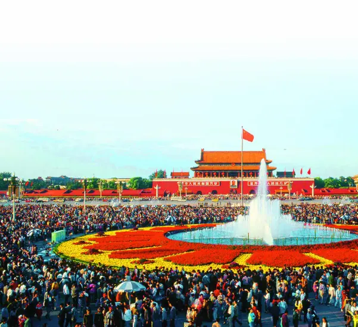
Праздник на площади ТяньаньмэньУчастники праздника у Тяньаньмэнь Плотность населения Китая
Плотность населения КитаяНароды Китая
统一的多民族大家庭 · с. 10
Книга знакомит с принятым в Китае делением на 56 национальностей. Ханьцы составляют большинство; многие другие народы живут на обширных территориях северо-запада, юго-запада и северо-востока. Поэтому небольшая доля в населении страны может сочетаться с заметным присутствием на её карте.
Для уйгуров книга называет Синьцзян, для монголов — нагорье Внутренней Монголии, для тибетцев — Цинхай-Тибетское нагорье. Орочоны связаны с лесистыми горами Хингана. Эти примеры объясняют, насколько разные природные условия стояли за развитием местных обычаев.
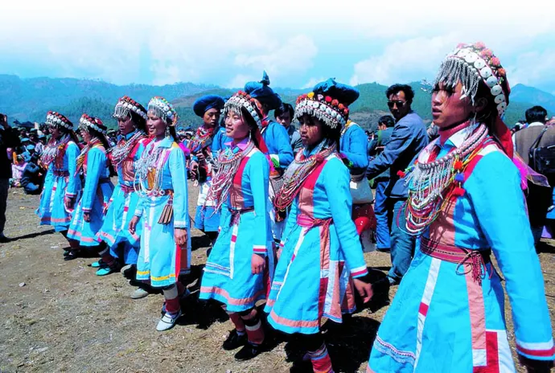
Женщины в голубых национальных костюмах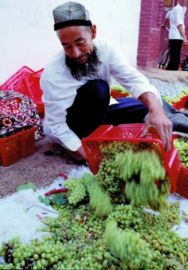
Сбор урожая Праздничный головной убор
Праздничный головной убор Женщины в традиционном праздничном наряде
Женщины в традиционном праздничном нарядеРельеф Китая
中国的地形 · с. 12
Если мысленно пересечь Китай с запада на восток, получится спуск по трём ступеням. Сначала идёт Цинхай-Тибетское нагорье, затем более низкие нагорья и впадины, наконец восточные равнины и холмы. Крупные реки используют этот уклон, а в местах резкого падения русла особенно велики возможности гидроэнергетики.
В разрезе страны хорошо заметно, почему крупнейшие реки направляются к восточным морям. Плоская или холмистая поверхность одной ступени сменяется резким перепадом у следующей. Низкие равнины на востоке занимают лишь часть общей площади страны.
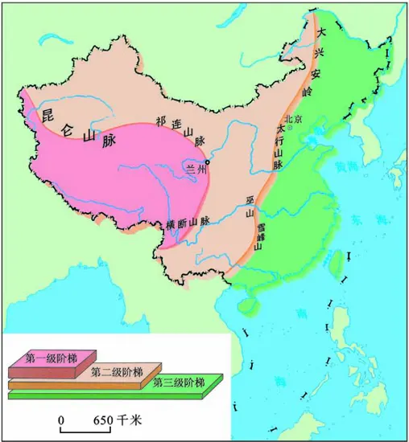
Три высотные ступени Китая Физическая карта Китая
Физическая карта КитаяКлимат Китая
中国的气候 · с. 14
Климатическая карта разделяет страну на муссонный восток, сухой северо-запад и высокогорный Цинхай-Тибетский район. На востоке летняя жара совпадает с сезоном дождей, что удобно для земледелия. Зимой разница севера и юга особенно наглядна: Харбин устраивает праздник ледовых скульптур, пока в Гуанчжоу цветут растения.
Даже одинаковая широта ещё не означает одинаковую зиму. Авторы сравнивают Пекин с Нью-Йорком и обращают внимание на влияние континента. Внутри самого Китая важны также удалённость от моря и абсолютная высота местности.
Экономика Китая
中国的经济 · с. 16
Авторы связывают экономические перемены с реформами и открытием страны после 1978 года. На побережье предприятия опирались на порты, транспорт и связь; внутренние районы вступали в преобразования с другими возможностями. Показатели производства характеризуют экономику начала XXI века.
В главе экономическое развитие показано через вполне видимые перемены: работу портовых терминалов, рост городов и появление новых промышленных предприятий. Начало этого процесса авторы связывают с открытием прибрежных районов для внешней торговли.
Сельское хозяйство
中国的农业 · с. 18
Линия Циньлинь — Хуайхэ объясняет различия в земледелии: севернее больше богарных полей пшеницы, кукурузы и сои, южнее существенную роль играет заливной рис. На склонах Юньнани террасы превращают горный рельеф в пригодные для полива площадки.
На юге долгий тёплый сезон позволяет получать с поля больше одного урожая за год. В горных районах Юньнани земледельцы приспосабливают для обработки сами склоны. Так в пределах влажного юга различаются и набор культур, и форма полей.
Промышленность
中国的工业 · с. 21
Промышленная карта складывалась неравномерно. В Ляонине сформировался тяжёлый промышленный район; вокруг Пекина, Тяньцзиня и Таншаня — комплекс разных отраслей. Ещё два пояса авторы выделяют в дельтах Янцзы и Чжуцзяна, где предприятия тяготеют к крупным городам и портам.
Крупные индустриальные районы связаны с разными видами производства. Старые центры северо-востока опирались на тяжёлую промышленность, а в дельте Чжуцзяна выросли обрабатывающие предприятия, связанные с торговлей через южные порты.
 Обрабатывающий завод в Шэньчжэне
Обрабатывающий завод в Шэньчжэне Промышленные сооружения на закате
Промышленные сооружения на закате Заводские трубы и градирня
Заводские трубы и градирняРесурсы и окружающая среда
Ресурсы полезных ископаемых
矿产资源 · с. 24
Запасы угля, нефти и цветных металлов разнесены по разным районам. Авторы сопоставляют северо-восточный Дацин с нефтяными месторождениями Карамая и Таримской впадины на западе. Большие суммарные запасы страны ещё не означают высокой обеспеченности ресурсами на одного жителя.
Наличие месторождения и возможность снабдить его сырьём завод — разные географические вопросы. Например, добычу нефти книга размещает как в северо-восточной части страны, так и в далёких внутренних впадинах Синьцзяна. По карте видно, насколько различны расстояния до потребителей.
Животный мир
动物资源 · с. 26
Животный мир показан через виды с разными местообитаниями: большую панду, золотистую обезьяну, японского журавля, китайского аллигатора и дикого двугорбого верблюда. Для сохранения такого разнообразия нужны и горные леса, и водно-болотные угодья, и пустыни.
Северо-восточный тигр связан с лесами вблизи границы, тогда как большая панда зависит от бамбуковых зарослей. Перелётные журавли пользуются разными территориями в разные сезоны. На этих примерах видно, почему охрана вида требует охраны конкретных мест его обитания.
Северо-восточный тигр Большая панда ест бамбук
Большая панда ест бамбук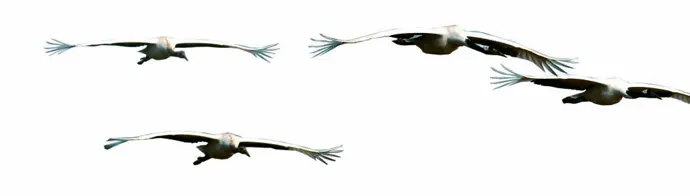
Стая журавлей в полёте Журавль с расправленными крыльями
Журавль с расправленными крыльями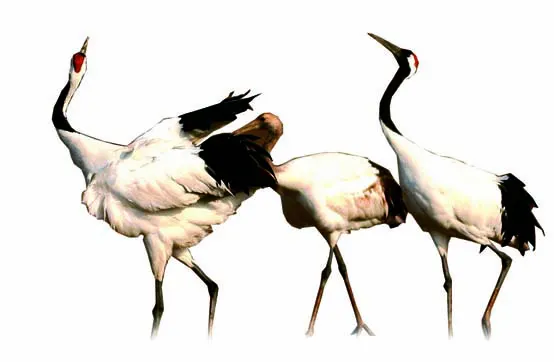
Пара журавлейЗолотистая курносая обезьяна Растительный мир
植物资源 · с. 31
Смена широт и высот позволяет соседствовать очень разным растительным сообществам. Среди деревьев авторы выделяют метасеквойю, гинкго и катайю как древние сохранившиеся линии. Знакомые образы бамбука, сосен и кипарисов таким образом получают ботанический контекст.
Название «живые ископаемые» относится к деревьям, сохранившим очень древние черты. Среди примеров главы — гинкго с характерными веерообразными листьями. По соседству с рассказом о редких деревьях показаны бамбуковые рощи, совсем иная по облику растительность.
Водные ресурсы
水资源 · с. 33
Реки, озёра и высокогорные ледники образуют разные запасы пресной воды. Юго-восток получает гораздо больше стока, чем засушливый внутренний запад. Чтобы оценить обеспеченность водой, приходится одновременно учитывать население, район и сезон.
Высокое место страны по общему объёму воды плохо описывает местные условия. На равнине густо населённого севера водоснабжение приходится рассчитывать с учётом и численности жителей, и сезона. Отсюда переход книги к водохранилищам и межбассейновым проектам.
 Поток воды с речными наносами
Поток воды с речными наносами Речная сеть Китая
Речная сеть КитаяОхрана окружающей среды
环境保护 · с. 35
На примере защитных лесополос на севере книга показывает, как растительность помогает удерживать почву и сдерживать пески. Другой инструмент — заповедники, где сохраняется целая среда обитания. Обе меры авторы рассматривают на фоне быстрого промышленного развития.
Сычуаньский Волун иллюстрирует принцип заповедной территории. Под охрану берут лес вместе с животными, для которых он служит домом. У защитной лесополосы другая задача — изменить условия на открытой земле, где ветер уносит почву и переносит песок.
К оглавлениюТранспорт и ирригация
Транспорт
Железные дороги
铁路 · с. 38
Железнодорожную сеть удобно читать как пересечение магистралей север — юг и запад — восток. В точках пересечения, среди которых Пекин и Ухань, возникают узлы пересадки и перегрузки. Отдельно книга фиксирует ранний этап ускорения пассажирского сообщения.
Авторы показывают развитие сети на двух уровнях. Одни линии соединяют провинции через горы и долины, на уже освоенных направлениях сокращается время в пути благодаря повышению скорости поездов. На фотографиях рядом оказываются обычная горная линия и скоростной состав.
Автодороги
公路 · с. 42
Автодороги связывают населённые пункты, куда железная дорога не доходит. Авторы различают расширение обычной дорожной сети до уездов и строительство скоростных трасс между крупными городами, начавшееся значительно позднее.
Городские эстакады на фотографиях показывают, как несколько потоков движения могут пересечься на разной высоте. У вантового моста другая задача — провести непрерывную трассу через широкую водную преграду. Оба сооружения становятся частью одной дорожной сети.
Авиасообщение
航空 · с. 44
Воздушные маршруты сокращают время между удалёнными городами и связывают внутреннюю сеть с международными направлениями. Пекин, Шанхай, Гуанчжоу и Гонконг в книге выступают как крупные узлы этих связей.
В воздушном транспорте особенно заметна роль пересадочных городов. Аэропорт собирает пассажиров с многих внутренних направлений, а затем связывает их с другими регионами и странами. Иллюстрации показывают весь комплекс от терминала до перрона и взлётных полос.
Аэропорт с высотыПассажирские самолёты на стоянке Ночной перрон аэропорта
Ночной перрон аэропорта Взлётные полосы и терминал
Взлётные полосы и терминал Судоходство
水运 · с. 46
У судоходства страны две географии: морское побережье и внутренние водные пути. Янцзы образует длинную судоходную ось от Сычуани к морю, а Великий канал даёт ей связь с северным направлением. Морскую традицию авторы иллюстрируют плаваниями Чжэн Хэ.
Внутренняя навигация следует течению крупных рек и каналов, морская связывает порты побережья с внешними рынками. Контейнерный причал на фотографии показывает место, где груз меняет вид транспорта и продолжает путь вглубь страны.
Ирригация
Гидроузел «Три ущелья»
三峡工程 · с. 48
У Саньдоупина возле Ичана плотина «Три ущелья» решает сразу несколько задач. Водохранилище помогает регулировать паводки Янцзы, перепад высот используется для выработки электричества, судоходные сооружения позволяют преодолевать плотину. Проект описан на стадии строительства.
Высота плотины по данным книги составляет 185 метров. Из-за разницы уровней воды выше и ниже сооружения для прохода судов нужен специальный путь. Так в одном инженерном комплексе соединены регулирование реки, энергетика и навигация.
 Гидроузел «Три ущелья» на Янцзы
Гидроузел «Три ущелья» на Янцзы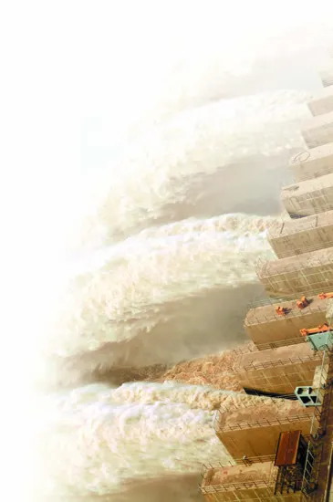
Сброс воды через плотинуГидроузел Сяоланди
小浪底水利枢纽工程 · с. 50
На Хуанхэ гидроузел Сяоланди должен управляться не только с паводочной водой, но и с огромным количеством наносов. Регулирование стока и переноса ила особенно важно ниже по течению, где русло проходит по густонаселённой равнине.
Сяоланди построен на основном русле Хуанхэ севернее Лояна. Во время сброса из водохранилища вода подхватывает отложения и уносит их вниз. Бурый поток на иллюстрации позволяет увидеть ту самую взвесь, с которой приходится работать гидротехникам.
 Водосброс гидроузла Сяоланди
Водосброс гидроузла Сяоланди Поток с наносами на Хуанхэ
Поток с наносами на ХуанхэПереброска воды с юга на север
南水北调 · с. 52
Проект переброски воды отвечает на несоответствие между влажным югом и потребностями засушливого севера. Авторы разбирают восточное, центральное и западное направления. Восточный путь использует участки Великого канала, в то время как для остальных трасс иные рельеф и инженерные условия.
На восточном направлении можно использовать уже существующий путь Великого канала. Центральный путь должен доставлять воду в районы Северного Китая другим коридором. Западный вариант рассматривает связь верховьев рек, то есть совсем иные высоты и условия строительства.
К оглавлениюЛандшафт Китая
Горы
Гималайские горы
喜马拉雅山 · с. 56
Гималаи образуют южный край Цинхай-Тибетского нагорья. Это система почти параллельных хребтов; высочайшие вершины, включая Джомолунгму, относятся к главному из них. Снег и ледники высокогорья дают начало потокам, уходящим в глубокие долины.
Южная окраина нагорья выглядит на карте как длинная горная дуга. Высота отдельных пиков становится понятнее на фоне всего массива: даже соседние перевалы и долины здесь лежат высоко над уровнем моря. Книга показывает и общий вид системы, и отдельную вершину.
Горы Циньлинь
秦岭 · с. 58
Циньлинь в центральном Китае разделяет бассейны Хуанхэ и Янцзы. Зимой хребет ослабляет холодные ветры, летом задерживает часть влаги, идущей с юго-востока. На примере Тайбайшаня и крутых гранитных вершин Хуашаня авторы показывают, как по-разному выглядит одна горная система.
Длина Циньлиня в книге оценивается примерно в 1500 километров. Поэтому его влияние заметно далеко за пределами одной провинции. В сельскохозяйственной главе тот же хребет вместе с Хуайхэ служит ориентиром для сравнения северного и южного земледелия.
 Сосна над обрывом в горах Тайбайшань
Сосна над обрывом в горах Тайбайшань Скалистая стена Циньлиня
Скалистая стена Циньлиня Хищная птица над горами
Хищная птица над горамиГоры Чанбайшань
长白山 · с. 60
На юго-востоке Цзилини вулканическое происхождение Чанбайшаня видно по озеру Тяньчи: вода заполнила кратер, окружённый крутыми стенами. От лесистых предгорий к вершине меняются растительность и климат. Эти высотные пояса объясняют разнообразие природных ресурсов района.
Кратерные стенки вокруг Тяньчи хорошо видны на фотографии сверху. Ниже озера облик гор меняется: вместо скал и снежных участков появляются леса и ручьи. Поэтому одну и ту же систему книга показывает и как вулканический массив, и как место обитания лесных животных.
 Зимняя река в Чанбайшане
Зимняя река в Чанбайшане Заснеженные склоны Чанбайшаня
Заснеженные склоны Чанбайшаня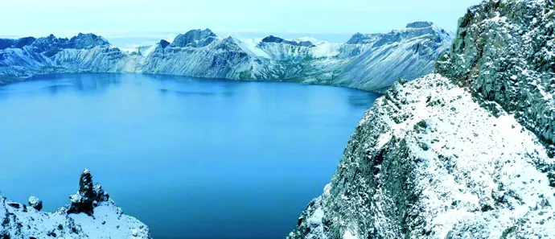
Кратерное озеро Тяньчи Зверёк на ветке
Зверёк на ветке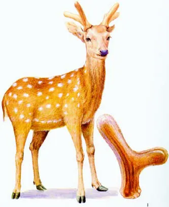
Пятнистый олень с детёнышемГоры Тяньшань
天山 · с. 62
Тяньшань разделяет Синьцзян на северную и южную части. У снежных вершин и ледников берут начало потоки, которые ниже питают пастбища и оазисы. В пределах одного горного района встречаются ледовые, лесные и засушливые ландшафты.
На севере от Тяньшаня лежит Джунгарская впадина, на юге — Таримская. Снег и горные потоки особенно важны на фоне сухих низин по обе стороны хребта. У подножий вода позволяет использовать землю под пастбища и посевы.
Горы Куньлунь
昆仑山 · с. 64
Куньлунь протягивается от Памира на восток вдоль северной окраины Тибетского нагорья. На востоке система расходится на ветви; одна из них образует водораздел верховьев Янцзы и Хуанхэ. Таяние снега даёт воду рекам у подножия гор.
Куньлунь удобно искать по соседству с Таримской впадиной. С её южного края горы отделяют пустынные низины от высокого нагорья. На обзорной карте эта линия заметнее, чем на фотографии любой отдельной вершины.
Плато и нагорья
Цинхай-Тибетское нагорье
青藏高原 · с. 66
Цинхай-Тибетское нагорье объединяет высокие равнины, мощные хребты и ледники. Ледовые массы служат естественными хранилищами воды, из которых питаются крупные азиатские реки. Высота здесь определяет климат даже в сравнительно южных широтах.
На фотографиях равнинные участки нагорья заняты пастбищами, а выше поднимаются снежные хребты. Животные и растительность должны выдерживать холод даже там, где поверхность кажется ровной. Поэтому понятия «равнина» и «низменность» здесь особенно важно различать.
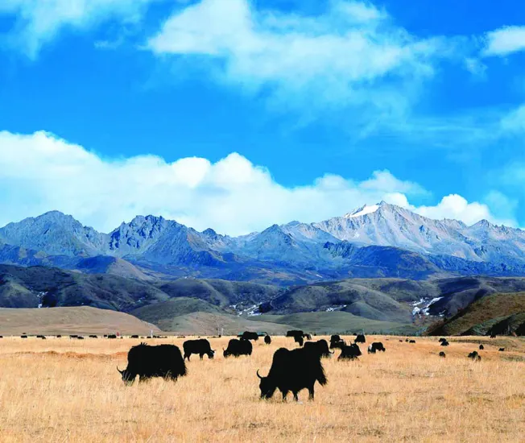
Яки на Цинхай-Тибетском нагорье Горные хребты нагорья с высоты
Горные хребты нагорья с высотыНагорье Внутренней Монголии
内蒙古高原 · с. 68
Внутренняя Монголия отличается широкими открытыми пространствами и плавным рельефом. Более увлажнённые участки заняты степями и используются как пастбища; в сухих районах преобладают полупустыни и пески.
При движении по нагорью увлажнение меняется, и сплошные травянистые пространства уступают место полупустыне. Юрты и стада на фотографиях относятся к пастбищной части нагорья. Они показывают связь местного скотоводства с открытым рельефом.
Лессовое нагорье (нагорье Хуанту)
黄土高原 · с. 70
Лёсс легко размывается. Ливни прорезают в нём глубокие овраги и уносят почву в реки, а распашка склонов усиливает потери. Восстановление леса и травяного покрова авторы связывают с сохранением плодородия и уменьшением количества наносов.
Нагорье лежит между Великой стеной и Циньлинем и простирается от Тайханшаня к Циляньшаню. Его площадь в книге оценена примерно в 400 тысяч квадратных километров. Глубокая сеть промоин образуется там, где вода легко размывает толщу лёсса.
Юньнань-Гуйчжоуское нагорье
云贵高原 · с. 72
Реки расчленили Юньнань-Гуйчжоуское нагорье глубокими ущельями. Среди гор Юньнани встречаются небольшие котловины с плодородной почвой: именно там сосредоточены поля и города. В Гуйчжоу раздробленность поверхности особенно заметна.
Многочисленные реки глубоко врезаются в поверхность нагорья. Поэтому соседние площадки, близкие на карте, могут быть разделены крутым ущельем. Иллюстрации связывают две особенности местности: обработанные террасы наверху и карстовые полости под поверхностью.
Равнины
Северо-восточная равнина
东北平原 · с. 74
Северо-восточная равнина объединяет несколько низменных областей, лежащих между горными системами. Широкие участки ровной земли и плодородные чёрные почвы благоприятны для крупного земледелия. Выращивание культур ограничивает холодный сезон.
Равнина лежит между Большим Хинганом и горными районами Чанбайшаня, с севера её ограничивает Малый Хинган. Часть её почв образует плодородный чернозёмный пояс. Фотографии сельскохозяйственных полей показывают хозяйственное значение этой обширной ровной территории.
 Поля на чернозёмах
Поля на чернозёмах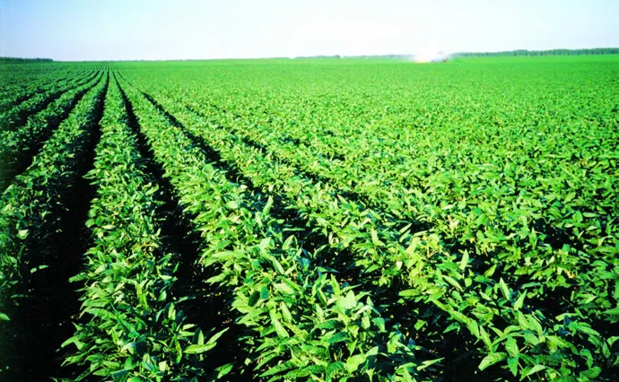
Посевы на Северо-Восточной равнинеСеверо-китайская равнина
华北平原 · с. 76
Северо-Китайская равнина нарастала за счёт речных отложений, прежде всего выносимых Хуанхэ. Ровная поверхность удобна для полей и поселений, но та же река, которая создавала сушу, приносила разрушительные наводнения.
Другое название — равнина Хуанхэ, Хуайхэ и Хайхэ — прямо указывает на три речные системы. Их наносы участвовали в формировании поверхности. Та же ровная местность благоприятствует и земледелию, и прокладке дорог между городами.
 Прямоугольные участки полей
Прямоугольные участки полей Орошение посевов
Орошение посевовРавнина среднего и нижнего течения Янцзы
长江中下游平原 · с. 78
Среднее и нижнее течение Янцзы окружает сеть низин, озёр, проток и каналов. Здесь вода одновременно служит для полива, рыболовства и перевозок. Так сложился густонаселённый край рисовых полей и городов у воды.
Западным ориентиром равнины служит Ичан в Хубэе. Дальше к востоку русло Янцзы связано с множеством озёр и искусственных каналов. Поэтому путь по воде здесь может вести и вдоль главной реки, и поперёк неё по боковым протокам.
 Цветущие поля в долине Янцзы
Цветущие поля в долине Янцзы Водный путь у скал
Водный путь у скал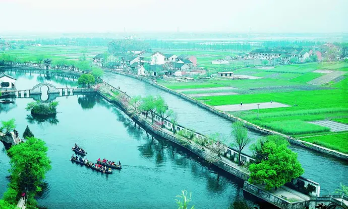
Поселение у канала на равнине ЯнцзыВпадины
Таримская впадина
塔里木盆地 · с. 80
Таримская впадина лежит между Тяньшанем и Куньлунем. Её внутреннюю часть занимает Такла-Макан, а у гор вдоль рек и подземных вод располагаются оазисы. По этой обитаемой окраине пустыни шли торговые пути.
От окраины впадины к её центру ландшафты сменяются кольцами. Горные потоки питают оазисы у подножий, а в глубине впадины лежат пески. Этим объясняется расположение поселений по краям сухого внутреннего пространства.
 Караван в песках Таримской впадины
Караван в песках Таримской впадины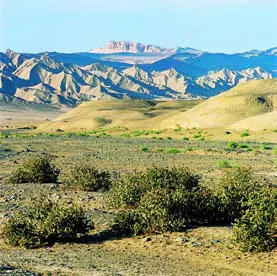
Край пустыни у предгорийДжунгарская впадина
准噶尔盆地 · с. 82
Джунгарская впадина находится севернее Тяньшаня. Её обрамление и доступ воздушных масс с запада отличают её от более сухого Тарима. В пределах впадины авторы отмечают пустыни, пастбища и нефтяные ресурсы.
Джунгарская впадина находится между Алтаем и Тяньшанем. Её поверхность понижается к западу, а в центре раскинулась пустыня Гурбантюнгют. В недрах впадины обнаружена нефть, так что песчаная поверхность скрывает важный для хозяйства район добычи.
 Дюны Джунгарской впадины
Дюны Джунгарской впадины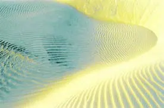
Песчаная рябь на склоне дюныЧайтамская впадина
柴达木盆地 · с. 83
Чайдамская впадина лежит высоко в горах Цинхая. Сильное испарение способствует накоплению солей в бессточных озёрах. Солёные водоёмы, месторождения и сухие поверхности создают необычное соседство высокогорья и пустыни.
Среди крупных китайских впадин Чайдамская выделяется высоким положением на северо-востоке Цинхай-Тибетского нагорья. Даже её широкое плоское дно находится высоко над морем. Термин «впадина» описывает положение относительно окружающих гор.
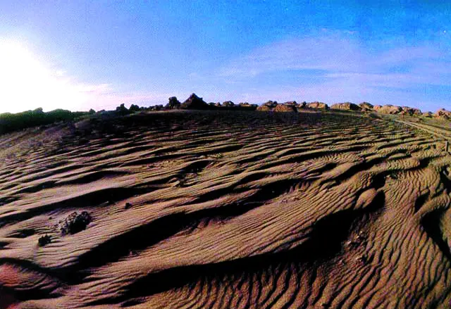
Поверхность Чайдамской впадины Узоры на поверхности впадины
Узоры на поверхности впадиныСычуаньская впадина
四川盆地 · с. 84
Сычуаньская впадина окружена горами и отличается от западных засушливых котловин влажностью и земледелием. Особое место занимает равнина Чэнду, где орошение позволило интенсивно использовать плодородные земли.
Замкнутый горный обод здесь сочетается с относительно низким дном, лежащим примерно на высоте 300–600 метров. Книга помещает впадину в верхнем бассейне Янцзы. Речные долины прорезают окружающие горы и дают выход к другим областям.
Реки и озёра
Река Чанцзян (Янцзы)
长江 · с. 86
Янцзы берёт начало на нагорье и пересекает несколько совершенно разных областей. В верховьях важны падение русла и ущелья; в среднем и нижнем течении река объединяет озёрные равнины, сельское хозяйство, порты и крупные города.
От истоков в горах Тангла до Восточно-Китайского моря Янцзы проходит через одиннадцать административных регионов. Сычуань, Чунцин и Хубэй находятся на одном большом водном пути с Цзянсу и Шанхаем. Поэтому река связывает внутренние области с морем.
Река Хуанхэ (река Желтая)
黄河 · с. 88
Хуанхэ выносит огромное количество лёссового материала. Там, где течение замедляется на равнине, ил оседает и поднимает русло, вынуждая наращивать дамбы. Поэтому история освоения бассейна неотделима от истории борьбы с паводками.
Название «Жёлтая» легче понять по фотографии воды, несущей взвешенный материал. Наносы переносятся вниз и откладываются при замедлении течения. Эта особенность объясняет, почему в отдельной главе о плотине Сяоланди так много внимания уделено именно илу.
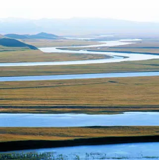
Разветвлённое русло Хуанхэ Бурный поток Хуанхэ
Бурный поток Хуанхэ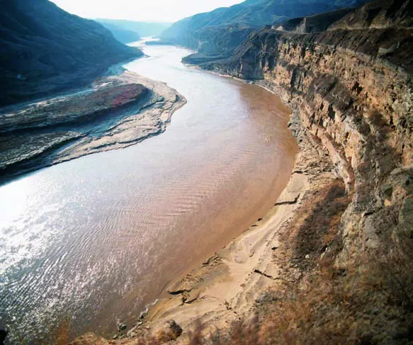
Хуанхэ в ущелье Вода и речные наносы
Вода и речные наносы Речная долина среди полей
Речная долина среди полейРека Ялуцзанбуцзян (Брахмапутра)
雅鲁藏布江 · с. 91
Ялуцзанбуцзян течёт по югу Тибета, затем резко поворачивает вокруг горного массива и проходит через глубокий каньон. Далее её воды покидают Китай и входят в систему Брахмапутры. Долина и ущелье показывают разные стороны одной реки.
В верховьях река идёт по высокогорным, сравнительно широким долинам с озерцами и заболоченными участками. На этих отрезках течение спокойно. Дальше та же река входит в глубоко врезанные горные ущелья и резко меняет характер.
 Извилистая Ялуцзанбуцзян на закате
Извилистая Ялуцзанбуцзян на закате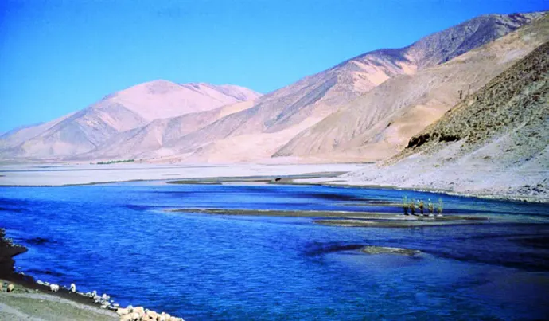
Высокогорная долина ЯлуцзанбуцзянаВеликий канал (Бэйцзин-Ханчжоуский канал)
京杭运河 · с. 93
Великий канал связывает Пекин с Ханчжоу и соединяет несколько речных бассейнов. Канал позволял доставлять зерно и товары из богатых южных районов на север. В отличие от крупных рек, его главное направление поперечно общему уклону территории.
По пути из Пекина в Ханчжоу канал связывает пять речных систем: Хайхэ, Хуанхэ, Хуайхэ, Янцзы и Цяньтанцзян. Его длина в книге — 1782 километра. Это помогает понять, почему канал рассматривается отдельно от каждой из соединённых им рек.
Озеро Поянху
鄱阳湖 · с. 94
Поянху в Цзянси связано с Янцзы. Его площадь резко меняется вместе с уровнем воды. При спаде воды обнажаются отмели и болотные участки, важные для перелётных птиц.
Поянху находится на севере Цзянси и через северный выход сообщается с Янцзы. В книге озеро рассматривается вместе с соседними Лушанем и горой Шичжуншань у его выхода. Так на одной карте сходятся водный путь и два известных горных пейзажа.
Озеро Дунтинху
洞庭湖 · с. 95
Дунтинху в Хунани принимает воду нескольких рек и связано с Янцзы. В период высокой воды озёрная котловина вмещает часть паводка. Очертания берегов и площадь водной поверхности меняются по сезонам.
Дунтинху лежит на северной окраине Хунани к югу от Янцзы. Старые танские и сунские тексты описывали особенно обширную водную гладь. Башня Юэянлоу служит точкой, с которой этот пейзаж воспринимали поэты и путешественники.
Озеро Тайху
太湖 · с. 96
Тайху — мелководное озеро в низовьях Янцзы, среди городов и каналов Цзяннани. Оно входит в хозяйственную сеть края: даёт воду, поддерживает рыбный промысел и связывает поселения водными путями.
Тайху находится у границы Цзянсу и Чжэцзяна, рядом с Сучжоу и Уси. Множество небольших островов и прибрежных холмов прерывает водную гладь. За озёрным пейзажем расположен плодородный, влажный и густо прорезанный каналами район.
 Зелёный берег озера ТайхуЦветущие деревья у Тайху
Зелёный берег озера ТайхуЦветущие деревья у Тайху Пагода на озере
Пагода на озереОзеро Цинхай
青海湖 · с. 97
Цинхай — крупное солёное озеро бессточного высокогорного бассейна. Вокруг него сочетаются степные пастбища, горы и места гнездования птиц. По этим признакам оно резко отличается от пресных озёр долины Янцзы.
Зимой поверхность Цинхая замерзает. Весной ветер сдвигает расколотые льдины к берегу, и облик озера резко меняется. Рассказ о водоплавающих птицах добавляет ещё одно измерение к карте большого солёного высокогорного водоёма.
Водоплавающая птица Берег озера Цинхай
Берег озера Цинхай Колония птиц на озере Цинхай
Колония птиц на озере Цинхай Острова
Остров Тайвань
台湾岛 · с. 99
Главную ось Тайваня образуют горы; на западе лежит более широкая полоса равнин. Различия высот создают несколько растительных поясов. Равнинная часть удобнее для земледелия, поселений и дорог.
С запада остров отделяет Тайваньский пролив, а с востока он открыт Тихому океану. На юге лежит пролив Баши. Такое положение объясняет место Тайваня на морских путях между Восточной Азией и странами западной части Тихого океана.
 Горный водоём на Тайване
Горный водоём на Тайване Панорама мемориального комплекса на Тайване
Панорама мемориального комплекса на Тайване Горное поселение в облакахАркады торговой улицыГород у подножия зелёных гор
Горное поселение в облакахАркады торговой улицыГород у подножия зелёных горОстров Хайнаньдао
海南岛 · с. 103
Хайнань отделяет от полуострова Лэйчжоу пролив Цюнчжоу. Внутри острова поднимаются горы, по краям располагаются освоенные прибрежные равнины. Тропический климат связывает в одном разделе леса, плантационные культуры и морское побережье.
Хайнань отделён от полуострова Лэйчжоу проливом Цюнчжоу. В центре острова поверхность поднимается, а по краям снижается к морю. Хребет Учжишань получил своё название по вершинам, которые с юго-востока напоминают пять пальцев.
Пляж ХайнаняПальмы на закате Острова Южно - Китайского моря
南海诸岛 · с. 105
Книга знакомит с островными группами Южно-Китайского моря, коралловыми рифами, мелководьями и атоллами. Для понимания карты здесь важны и подводные формы: риф и постоянно выступающий над водой остров имеют разный вид.
Авторы различают острова, рифы и подводные банки. Значительная часть этих образований связана с кораллами, лишь для отдельных участков указано вулканическое происхождение. Фотография мелководья помогает понять, почему на карте риф и остров обозначаются по-разному.
 Коралловое мелководье Южно-Китайского моря
Коралловое мелководье Южно-Китайского моря Закат над морем
Закат над моремСемь древних столиц Китая
Пекин
北京 · с. 108
Пекин лежит у северного края равнины, рядом с горами. Долгая столичная история читается в осевой планировке, дворцах, воротах и императорских садах. Современную столицу авторы рассматривают вместе с её историческим ядром.
Историю столичной роли Пекина авторы начинают с эпохи Ляо, когда город служил одной из резиденций двора. Далее следуют Чжунду при Цзинь и Даду при Юань. Эти названия относятся к разным этапам развития города в одном районе.
Ворота Тяньаньмэнь в ПекинеВечерняя панорама ПекинаПамятник народным героям Интерьер дворцового залаЗапретный город с высоты
Интерьер дворцового залаЗапретный город с высоты Сиань
西安 · с. 112
Сиань, исторический Чанъань, расположен в долине Вэйхэ. Здесь сходились имперские дороги и начинался путь на запад. Памятники разных династий позволяют отличить древнюю столичную область от более позднего города за сохранившимися стенами.
Сиань находится к северу от Циньлиня и к югу от реки Вэй. В этом коридоре соединяются пути востока и северо-запада страны. Глава ставит рядом древние памятники и роль современного провинциального центра науки, образования и промышленности.
Башня в СианеАрхеологические раскопки в районе СианяБольшая пагода диких гусейДворцовый комплекс у водыПагода среди деревьев Лоян
洛阳 · с. 116
Лоян в бассейне Хуанхэ неоднократно становился столицей. Его положение связывало равнинные земли Центрального Китая с дорогами в соседние области. Храмы и пещерные памятники дополняют рассказ о династической истории.
Название Лояна связано с положением города к северу от реки Ло. Местность лежит в западной Хэнани, в пределах Центральной равнины. Этим объясняется её частое появление в рассказах о дворах разных династий.
Вход в храм Белой лошади Лоянские пионыБуддийские фигуры Лунмэня
Лоянские пионыБуддийские фигуры Лунмэня Керамический верблюд
Керамический верблюд Нанкин
南京 · с. 119
Нанкин расположен на Янцзы: большая река давала городу пути сообщения и естественную защиту. Столичные периоды оставили городские стены, погребальные комплексы и другие памятники. География помогает понять, почему южные династии выбирали этот город.
В перечне нанкинских дворов встречаются Восточная У, Восточная Цзинь, южные Сун, Ци, Лян и Чэнь. Название «южная столица» удобно для сопоставления с Пекином. В разные эпохи две столицы принадлежали совершенно разным политическим системам.
Ворота городской стены Нанкина Огни на набережной Нанкина
Огни на набережной Нанкина Набережная и мост в НанкинеКанал в старой застройке Кайфэна
Набережная и мост в НанкинеКанал в старой застройке Кайфэна Кайфэн
开封 · с. 122
Кайфэн особенно важен как столица Северной Сун. Развитие торговли связывало его с каналами и речными перевозками. Соседство Хуанхэ приносило и риск паводков, многократно менявших судьбу города.
В древности Кайфэн назывался Бяньлян. До Северной Сун здесь размещались дворы нескольких из Пяти династий, в том числе Поздних Лян и Чжоу. Современный город на востоке Хэнани авторы описывают также как центр промышленности и образования.
 Улицы Кайфэна с высоты
Улицы Кайфэна с высоты Вход в монастырь в Кайфэне
Вход в монастырь в КайфэнеХанчжоу
杭州 · с. 124
Ханчжоу соединял южный конец Великого канала с богатым земледельческим краем. В эпоху Южной Сун город стал столицей. В рассказе о нём торговая роль соседствует с озером Сиху и традицией садово-паркового искусства.
История заселения района значительно старше столичной эпохи. В окрестностях Ханчжоу ещё в неолите существовала культура Лянчжу. В дальнейшем положение города определяли и выход к водным путям, и соседство озера Сиху.
Панорама Ханчжоу у воды Ивы на берегу Сиху
Ивы на берегу Сиху Анъян
安阳 · с. 127
Анъян известен прежде всего развалинами Иньсюй, поздней столицы Шан. Гадательные надписи на костях и панцирях дают прямые свидетельства ранней письменности. Археологические находки здесь важнее для понимания города, чем сохранившиеся наземные дворцы.
В XIV веке до н. э., по периодизации книги, правитель Пань Гэн перенёс столицу Шан в Инь. Её остатки ищут в районе Сяотуня у Аньяна. Находки гадательных костей позволяют связать этот участок местности с письменной историей династии.
 Сосуд из археологического собрания Аньяна
Сосуд из археологического собрания Аньяна Гадательная кость с надписью
Гадательная кость с надписьюГорода Китая
Шанхай
上海 · с. 130
Шанхай вырос у выхода бассейна Янцзы к морю. Порт связывает внутренние районы с внешней торговлей; Хуанпу разделяет историческую набережную и новый деловой район Пудун. Контраст двух берегов иллюстрирует перемены конца XX века.
Шанхай расположен там, где внутренний речной путь по Янцзы выходит к морю. У города была портовая торговля задолго до появления современных высоток. В книге эти две эпохи соединены через одну постоянную особенность — положение в устье.
 Телебашня «Жемчужина Востока» в ШанхаеВантовый мост в ШанхаеПавильоны и пруд старого Шанхая
Телебашня «Жемчужина Востока» в ШанхаеВантовый мост в ШанхаеПавильоны и пруд старого Шанхая Шанхайские высотки вечером
Шанхайские высотки вечеромГуанчжоу
广州 · с. 133
Гуанчжоу — торговый город дельты Жемчужной реки с давними морскими связями. Историю порта авторы сопоставляют с местным преданием о пяти баранах, давшим городу одно из его названий.
Гуанчжоу одновременно речной и морской порт. Он связан с севером железной дорогой, а через дельту Чжуцзяна — с побережьем. Мягкая влажная зима и цветение в разные сезоны объясняют его название «город цветов».
 Панорама Гуанчжоу
Панорама Гуанчжоу Мемориальный зал Сунь ЯтсенаСкульптура пяти баранов в Гуанчжоу
Мемориальный зал Сунь ЯтсенаСкульптура пяти баранов в Гуанчжоу Горный парк над городом
Горный парк над городомШэньчжен
深圳 · с. 136
Соседство Гонконга и создание особой экономической зоны изменили масштаб Шэньчжэня. На месте небольших поселений быстро выросли промышленные кварталы и городская инфраструктура. Для авторов это наглядный пример политики реформ и открытости.
Название Шэньчжэня авторы связывают с глубокой водной канавой у прежнего селения. В письменных источниках оно отмечено уже в 1410 году. Археологические следы поселений в этом районе намного древнее и относятся ещё к неолиту.
Шэньчжэнь в вечерних огняхПагоды у воды в Шэньчжэне Архитектурные миниатюры в парке
Архитектурные миниатюры в парке Куньмин
昆明 · с. 138
Куньмин расположен на Юньнаньском нагорье возле озера Дяньчи. Высота смягчает климат южной широты, отсюда образ «города весны». Озеро, цветы и окрестные каменные ландшафты связывают город с географией провинции.
За названием «город вечной весны» скрывается местная особенность: разница между днём и ночью, ясной и дождливой погодой здесь ощутима. Поэтому мягкое течение сезонов и быстрое изменение температуры в течение суток вполне уживаются.
Павильоны культурной деревниЦентральная застройка Куньмина Цветы над озером в Куньмине
Цветы над озером в Куньмине Сучжоу
苏州 · с. 141
Сучжоу стоит в краю каналов к востоку от Тайху. Вода организует улицы и торговые пути, а в классических садах становится частью тщательно выстроенного вида вместе с камнем, павильоном и растениями.
Сады Сучжоу создавались в разные эпохи. Цанлантин книга относит к Сун, Львиную рощу — к Юань, Сад скромного чиновника — к Мин. Посещение нескольких садов даёт возможность рассматривать местную традицию в развитии.
 Канал и старые дома СучжоуКамни и пруд в классическом саду
Канал и старые дома СучжоуКамни и пруд в классическом саду Крытая галерея и лотосы в Сучжоу
Крытая галерея и лотосы в Сучжоу Садовая ограда и декоративные камни
Садовая ограда и декоративные камниЦиндао
青岛 · с. 144
Циндао — морской город Шаньдуна. Бухты, пляжи и холмы формируют его облик вместе с портом. Прибрежное расположение помогает совместить в одном городе промышленную и курортную функции.
В Циндао улицы следуют склонам и выходят к бухтам. В старых кварталах сохранилась европейская по облику застройка. Морской пирс Чжаньцяо с павильоном на конце служит узнаваемым ориентиром города.
 Пляж и береговая линия Циндао
Пляж и береговая линия Циндао Улица старого Циндао
Улица старого ЦиндаоДалянь
大连 · с. 145
Далянь расположен у южной оконечности Ляодунского полуострова. Такое положение определило значение порта для северо-востока. Морское окружение проявляется и в облике города, и в использовании побережья для отдыха.
Для Даляня море одновременно источник промысловых ресурсов и дорога для внешней торговли. Порт дополняют железнодорожные и воздушные связи. В главе это объясняет соседство рыболовства, промышленности и приморского отдыха в одном городе Ляонина.
Лхаса
拉萨 · с. 146
Лхаса выросла в высокогорной речной долине. Потала, храм Джокханг и окружающие его улицы формируют разные центры городской жизни. По маршрутам паломников можно прочитать план старой части города.
Лхаса объединяет функции столицы автономного района, религиозного центра и транспортного узла нагорья. Значительная высота сочетается здесь с большим количеством солнечного света. На фотографиях городской жизни храм, рынок и дворец расположены в одном пространстве.
 Дворец Потала в ЛхасеУкрашение на краю храмовой крыши
Дворец Потала в ЛхасеУкрашение на краю храмовой крыши Фасад тибетского храмаЗолотое навершие храмаРынок в Лхасе
Фасад тибетского храмаЗолотое навершие храмаРынок в ЛхасеСянган
香港 · с. 149
Гонконг объединяет острова и материковую часть вокруг удобной глубоководной гавани. Ограниченность пригодной для застройки земли и интенсивная торговля объясняют плотную застройку, паромные связи и центральную роль порта.
Гавань Виктория находится между островом Гонконг и полуостровом Коулун. Поэтому порт расположен внутри самой городской застройки. К территории города относятся также Новые Территории и соседние острова, которые на панораме делового центра остаются за кадром.
 Подсвеченный мост в Гонконге
Подсвеченный мост в Гонконге Большой Будда на острове ЛантауБассейн морского парка
Большой Будда на острове ЛантауБассейн морского парка Высотки у гавани ВикторияТорговая улица Гонконга
Высотки у гавани ВикторияТорговая улица ГонконгаАомын
澳门 · с. 151
Макао находится на западной стороне устья Жемчужной реки. Португальское присутствие оставило в городской ткани церкви и площади рядом с китайскими храмами. Исторический центр показывает, как морская торговля соединяла разные традиции.
Макао лежит с западной стороны устья Чжуцзяна. В книге различаются полуостров Макао, Тайпа и Колоан. Для экономики времени издания авторы называют туризм и игорное дело, внешнюю торговлю, строительство и финансы.
 Фасад собора Святого Павла в Макао
Фасад собора Святого Павла в Макао Башня Макао на набережной
Башня Макао на набережной Храмовые ворота Макао
Храмовые ворота МакаоТайбэй
台北 · с. 153
Тайбэй расположен в котловине на севере Тайваня. От старого города сохранились отдельные ворота и храмы, включая Луншань. Их соседство с новыми кварталами позволяет проследить расширение городской застройки.
Тайбэй развивался в центре котловины в северной части острова. Железная дорога и автомобильные магистрали связали его с южными городами. Среди отраслей городской промышленности книга выделяет электротехнику, текстиль и полиграфию.
Городской парк Тайбэя Проспект в Тайбэе
Проспект в Тайбэе Вывески вечернего Тайбэя
Вывески вечернего Тайбэя К оглавлениюПутешествие по Китаю
Пекин. Гугун
北京故宫 · с. 156
Запретный город строится вдоль центральной оси. Внешний двор с парадными залами служил для государственных церемоний, внутренний — для жизни императорского двора. Ворота, стены и переходы обозначали границы доступа.
Комплекс Гугуна занимает более 720 тысяч квадратных метров. У него четыре стороны и четверо главных ворот: южный вход Умэнь, северные Шэньумэнь и восточные и западные ворота. Эта схема помогает ориентироваться между дворами и павильонами.
 Павильон Тайхэдянь в Гугуне
Павильон Тайхэдянь в Гугуне Императорский тронФигурки на дворцовой крышеБронзовый лев в Гугуне
Императорский тронФигурки на дворцовой крышеБронзовый лев в ГугунеВеликая китайская стена (Чанчэн)
长城 · с. 159
Великая стена использует гребни хребтов, перевалы и другие естественные преграды. Башни, заставы и стены работали как единая оборонительная система. Разные участки возводились и перестраивались при разных династиях.
Отдельные участки дают разное представление о стене. В Цзюйюнгуане на первом плане укреплённый проход, в Бадалине — протяжённая линия, следующая изгибам гребня. На панораме хорошо видно, как сама форма гор задаёт направление кладки.
Застава Цзюйюнгуань Стена на горном склоне
Стена на горном склоне Великая стена в утренней дымке
Великая стена в утренней дымке Стена у Бадалина
Стена у Бадалина Надвратная башня укрепления
Надвратная башня укрепления Тяньтань (Храм Неба)
天坛 · с. 162
В Храме Неба императоры совершали жертвоприношения и молились об урожае. Круглая и квадратная формы выражали старое представление о небе и земле. Зал молитв об урожае и круглый алтарь соответствовали разным частям обряда.
У ограды храмового комплекса северная сторона закруглена, южная выпрямлена. План выражал традиционное представление о круглом небе и квадратной земле. Молитва об урожае и жертвоприношение Небу совершались в разных частях ансамбля.
Зал молитвы об урожаеКруглая стена храмового комплекса Ихэюань (Летний Дворец)
颐和园 · с. 164
В Ихэюане озеро Куньмин и гора Долголетия составляют основу всей композиции. Длинная расписная галерея направляет движение вдоль воды. Павильон на склоне и виды с берега связывают архитектуру с рельефом.
Павильон Фосянгэ служит вертикальным ориентиром ансамбля, заметным с противоположного берега. Расписная галерея, напротив, ведёт посетителя почти горизонтально вдоль озера. Так два сооружения по-разному раскрывают связь воды и склона.
 Холм Ваньшоушань над озером Куньминху
Холм Ваньшоушань над озером Куньминху Павильон Фосянгэ в ИхэюанеРасписная Длинная галерея
Павильон Фосянгэ в ИхэюанеРасписная Длинная галереяБишу Шаньчжуан в Чэндэ (Дача в горах)
承德避暑山庄 · с. 166
Летняя резиденция в Чэндэ служила цинским императорам местом пребывания и решения пограничных дел. В пределах ансамбля соседствуют озёрные, равнинные и горные участки. Поэтому парк одновременно читается как место отдыха и как пространство государственной истории.
Резиденция стоит на западном берегу Улехэ в провинции Хэбэй. Её строительство началось при Канси в 1703 году. Двор мог проводить здесь жаркий сезон и заниматься делами северных пограничных областей вдали от Пекина.
 Островной павильон резиденции в Чэндэ
Островной павильон резиденции в Чэндэ Храмы и холмы Чэндэ
Храмы и холмы ЧэндэМинские могилы Шисаньлин
明十三陵 · с. 168
Тринадцать минских гробниц устроены в защищённой горами котловине к северо-западу от Пекина. Выбор места подчинялся представлениям о благоприятном ландшафте. Чанлин выделяется масштабом, а подземный дворец Динлина известен археологическими находками.
Строительство комплекса началось в 1409 году и продолжалось при последующих государях. На южном подходе к котловине выделяются две горы, сравнивавшиеся с драконом и тигром. Подземные залы Динлина показывают ту часть некрополя, которая скрыта за наземными павильонами.
Некрополь Шисаньлин с высоты Подземный зал гробницы Динлин
Подземный зал гробницы Динлин Гробница Цинь Шихуана и терракотовое войско
秦始皇陵与秦始皇兵马俑博物馆 · с. 169
Возле мавзолея первого императора Цинь обнаружены ямы с керамическим войском. Расстановка пеших воинов, коней и колесниц передаёт устройство армии. Различия в лицах, позах и снаряжении заметны даже при общей серийности изготовления.
Погребальный комплекс находится в Линьтуне в Шэньси. С общего вида первой ямы заметен порядок рядов, а по отдельно показанной фигуре — детали одежды и позы. Эти два масштаба объясняют, почему целая армия не выглядит повторением одного образца.
 Первый раскоп терракотового войска
Первый раскоп терракотового войска Фигура терракотового воина
Фигура терракотового воинаДунхуанские Пещеры. Могаоку
敦煌莫高窟 · с. 171
Могао у Дуньхуана — пещерный комплекс, где живопись и скульптура составляли единое пространство буддийского почитания. На стенах изображены религиозные сюжеты и сцены жизни. Расположение у путей через Ганьсу помогает понять многообразие художественных влияний.
Гроты находятся примерно в двадцати пяти километрах к юго-востоку от Дуньхуана у склонов Миншашаня. Начало работ книга относит к 366 году. Нынешний ансамбль возник постепенно, поэтому в соседних пещерах представлены разные эпохи.
 Фасад пещерного комплекса Могао
Фасад пещерного комплекса Могао Росписи и надписи в МогаоРасписная буддийская скульптура
Росписи и надписи в МогаоРасписная буддийская скульптураДревний город Лицзян
丽江古城 · с. 173
В старом Лицзяне главные улицы следуют вдоль воды, а переулки выходят к каналам и каменным мостам. Площадь Сыфанцзе служила торговым центром северо-западной Юньнани и перевалочным пунктом Чайно-конного пути. Жилые дома сохраняют черты эпох Мин и Цин. Авторы также рассказывают о письменности дунба и музыке наси. К северу от города возвышается снежная гора Юйлун; переход к ней на следующей странице связывает городскую географию с высокогорьем.
В книге насчитывается 76 старых каменных мостов Лицзяна. Они связывают небольшие участки застройки, разделённые каналами. Площадь Сыфанцзе уже при Мин и Цин служила узлом торговли, так что вода определяла и бытовые пути, и выход к рынку.
Канал в древнем Лицзяне Торговая площадь Сыфанцзе
Торговая площадь Сыфанцзе Снежная гора над озером близ Лицзяна
Снежная гора над озером близ Лицзяна Древний город Пинъяо
平遥古城 · с. 175
В Пинъяо сохранилась целая система укреплений: стены, башни, ворота и выступы для обороны. Внутри читается историческая сетка улиц. Поэтому ценность города состоит и в отдельных постройках, и в сохранившейся планировке.
Сохранившийся облик стен Пинъяо в значительной мере восходит к перестройке при Мин. На длинных прямых участках повторяются выступающие части укреплений. Сверху читается оборонительная линия, тогда как внизу улицы сохраняют масштаб торгового города.
 Стены и башни Пинъяо
Стены и башни Пинъяо Улица внутри стен Пинъяо
Улица внутри стен ПинъяоДревние селения Ваньнань
皖南古村落 · с. 177
Сиди и Хунцунь на юге Аньхоя показывают традицию Хуэйчжоу: белые стены, тёмная черепица, резные детали домов. В Хунцуне планировку сравнивают с фигурой быка. Водоёмы и каналы играют роль и в этом образе, и в повседневной жизни селения.
В число памятников местной культуры входят жилые дома, родовые храмы, учебные заведения и мемориальные арки. В Хунцуне особенно заметна продуманная водная система. Поэтому ценность деревни можно рассматривать сразу на двух уровнях — отдельного резного интерьера и плана целого поселения.
Дома Хунцуня у пруда Интерьер Чэнчжитана в ХунцунеРезной орнамент в старинном доме
Интерьер Чэнчжитана в ХунцунеРезной орнамент в старинном доме Белые стены и фигурные карнизы старой деревни
Белые стены и фигурные карнизы старой деревни Озеро Сиху г. Ханчжоу
杭州西湖 · с. 180
Озеро Сиху у Ханчжоу разделено дамбами и дополнено островами. Дамбы Бо и Су дают разные точки обзора; вид меняется по мере движения вдоль воды. Восприятие озера сформировали также поэзия и традиционные названия пейзажей.
Дамбы делят озеро на пять частей. Внутри находятся три острова, среди них Хусиньтин и Жуаньгундунь. Каменные башенки, связанные с видом «Три пруда отражают луну», дают небольшой и легко узнаваемый ориентир на широкой воде.
 Ивы и павильон на озере Сиху
Ивы и павильон на озере Сиху Каменная башенка Саньтань Иньюэ
Каменная башенка Саньтань ИньюэПейзажи Гуйлин
桂林山水 · с. 182
Пейзаж Гуйлиня складывается из карстовых вершин, пещер и реки Лицзян, связывающей город с Яншо. Один из примеров — скала Слоновий хобот, чей узнаваемый силуэт образован скалой и водой у берега.
Описанный район простирается от канала Линцюй у Синъаня на севере до Яншо на юге. Лицзян соединяет пейзажи в одну последовательность. На вершину Дусюфэн, в отличие от речного маршрута, поднимаются по вырубленным в склоне ступеням.
Карстовые пики Яншо на закатеСилуэты гор у реки Лицзян Плот между скалами Гуйлиня
Плот между скалами Гуйлиня Улиньюань
武陵源 · с. 184
В Улинъюане в Хунани выделяются тесно стоящие столбы кварцевого песчаника. Ущелья, лес и туман усиливают ощущение глубины. По форме этот ландшафт легко отличить от округлых известняковых вершин Гуйлиня.
Улинъюань объединяет три части: Чжанцзяцзе, Тяньцзышань и долину Сосиюй. Названия обозначают разные участки одного большого района. Близкие по виду каменные столбы можно поэтому встретить на фотографиях с разными географическими подписями.
Лесистые скалы ЧжанцзяцзеПесчаниковые столбы Улинъюаня Пейзажи Хуанлун
黄龙风景区 · с. 186
В Хуанлуне вода течёт по каскаду естественных террас и бассейнов, образованных карбонатными отложениями. Их цвет и форма составляют главный зрительный образ высокогорной долины. Рассказ дополняет храмовая ярмарка, на которую собирались жители окрестностей.
Хуанлун находится в Аба на севере Сычуани. Среди горных склонов вода образует неглубокие бассейны с естественными каменными перегородками. С верхней точки заметен весь каскад, а вблизи — граница между двумя соседними уровнями воды.
Водоём на фоне снежных гор ХуанлунаИзвестковые террасы Хуанлуна Бирюзовые бассейны Хуанлуна
Бирюзовые бассейны Хуанлуна Цзючжайгоу ( Долина 9-ти сел)
九寨沟 · с. 188
Цзючжайгоу получила название от девяти тибетских селений. Озёра, водопады и леса связаны в единую систему долин. Авторы приводят легенду о разбитом зеркале: его осколками объясняли множество разноцветных озёр.
Авторы выделяют среди местных пейзажей более сотни небольших озёр. Водопады и протоки соединяют водоёмы разных уровней. На прозрачных участках дно и упавшие деревья видны одновременно с отражением леса на поверхности.
Каскад в долине Цзючжайгоу Озеро и лес в Цзючжайгоу
Озеро и лес в Цзючжайгоу Цветущий луг в долинеПрозрачная вода у лесного берега
Цветущий луг в долинеПрозрачная вода у лесного берега Дворец Потала
布达拉宫 · с. 190
Потала возвышается на Красной горе над Лхасой. Белая и Красная части дворца различаются по назначению: жилые и административные помещения соседствуют со святилищами и мемориальными сооружениями. Внешняя ступенчатая форма следует склону горы.
Дворец складывается из множества помещений, поставленных уступами по форме горы. Поэтому основание здания и его верхняя часть видны из города на очень разной высоте. История резиденции далай-лам связывает этот архитектурный силуэт с прежним управлением Тибетом.
 Дворец Потала на холме
Дворец Потала на холме Молитвенные барабаны в Лхасе
Молитвенные барабаны в ЛхасеЦюйфу
曲阜 · с. 192
Память о Конфуции в Цюйфу имеет три разных адреса: храм для почитания, усадьбу рода Кун и семейное кладбище. Последовательное расширение храмового ансамбля показывает, как местная память превратилась в государственный культ.
Цюйфу расположен в юго-западной части Шаньдуна. Храмовый комплекс расширяли разные династии, а его нынешние дворы во многом связаны со строительством при Мин и Цин. Спланированная последовательность ворот ведёт к главным залам почитания.
Ворота мемориального комплекса в Цюйфу Резные колонны храма КонфуцияПещера с надписью о рождении Конфуция
Резные колонны храма КонфуцияПещера с надписью о рождении Конфуция Тайшань
泰山 · с. 195
Тайшань — восточная из пяти священных гор. Императорские церемонии связывали храм Дай у подножия с подъёмом к вершине. Ступени, надписи и храмы превращают маршрут восхождения в рассказ о политическом и религиозном значении горы.
В системе пяти священных гор Тайшань соответствует востоку. Названия Южных небесных ворот и вершины Нефритового императора отмечают разные места на одном подъёме. Вырезанные на скалах надписи позволяют проследить, как гору воспринимали посетители разных эпох.
Надпись «Первая из пяти священных гор» Лесистое ущелье Тайшаня
Лесистое ущелье Тайшаня Вершина ЮйхуанКаменные ворота на подъёмеЮжные небесные ворота Тайшаня
Вершина ЮйхуанКаменные ворота на подъёмеЮжные небесные ворота Тайшаня Суншань
嵩山 · с. 198
В Суншане рядом представлены разные традиции. В храме Чжунъюэ почитали горное божество, а монастырь Шаолинь связан с чань-буддизмом и боевым искусством. Памятники лучше читать как части большого горного района.
Две главные части массива называются Тайшишань и Шаошишань. Кроме храмов книга помещает здесь академию Сунъян и лес пагод. Поэтому местность объединяет памятники обучения, монашеской жизни и почитания горы.
 Храм в горах Суншань
Храм в горах Суншань Скульптура у ШаолиняЛес пагод Шаолиня
Скульптура у ШаолиняЛес пагод Шаолиня Занятие ушу
Занятие ушуХуаншань
黄山 · с. 201
Хуаншань узнают по сочетанию гранитных вершин, сосен необычной формы, облачных морей и горячих источников. Облака скрывают основание скал, поэтому с высоты отдельные вершины выглядят как острова. Такие виды объясняют особое место гор в китайской живописи.
В главе отдельно названы вершины Ляньхуафэн и Гуанминдин. При облачной погоде вершины превращаются в отдельные «острова», а при ясной становятся видны их скальные основания. Именно смена погоды создаёт разные виды одного и того же массива.
 Сосна на гранитном уступе ХуаншаняВершины, проступающие из облаковОблачное море ХуаншаняГранитный пик в облакахСкала и сосна на Хуаншане
Сосна на гранитном уступе ХуаншаняВершины, проступающие из облаковОблачное море ХуаншаняГранитный пик в облакахСкала и сосна на ХуаншанеЛушань
庐山 · с. 205
Лушань возвышается между Янцзы и озером Поянху. Влага и рельеф способствуют частым туманам, а потоки образуют водопады, включая трёхступенчатый Саньдецюань. Более прохладный горный климат сделал район местом летнего отдыха.
К северу от массива проходит Янцзы, к востоку лежит Поянху. Лушань известен и как место летнего отдыха. Водопады и площадки для наблюдения за восходом показывают две разные стороны маршрута — спуск к воде и подъём к открытому горизонту.
 Водопад СаньдецюаньСклон Лушаня над облаками
Водопад СаньдецюаньСклон Лушаня над облакамиУишань
武夷山 · с. 207
Самый наглядный маршрут по Уишаню проходит по изгибам ручья Цзюцюйси. С бамбукового плота поочерёдно открываются вершины Юйнюйфэн и Даванфэн. Река здесь задаёт сам порядок знакомства с горами.
Уишань находится на северо-западе Фуцзяни. Среди извилин реки выделяются десятки отдельных пиков с собственными названиями. В приложении горы отнесены к смешанному наследию, поскольку в одном районе представлены природные и культурные ценности.
Горы Уишань на рассвете Река между скалами Уишаня
Река между скалами Уишаня Горы У Дан
武当山 · с. 209
Уданшань в Хубэе известен даосскими храмами и школой боевых искусств. Постройки располагаются на склонах и гребнях, включая вершину Тяньчжу. Местную традицию внутренних боевых искусств книга связывает с Чжан Саньфэном.
В северо-западном Хубэе храмовые ансамбли Уданшаня распределены между многими вершинами. Главная из них — Тяньчжуфэн. Со склона видны отдельные постройки, но весь ансамбль раскрывается только по мере подъёма и перехода с гребня на гребень.
 Даосский храм на утёсе Уданшаня
Даосский храм на утёсе УданшаняГоры У Тай
五台山 · с. 210
Название Утайшань отсылает к пяти плоским вершинам. В долинах и на склонах сложился крупный буддийский центр, связанный с бодхисаттвой Маньчжушри. Среди опорных памятников раздела — монастырь Сяньтун.
Утайшань расположен на северо-востоке Шаньси. Каждый из пяти «помостов» даёт своё направление обзора, тогда как монастыри образуют отдельные центры в долинах. Один из примеров в книге — монастырь Сяньтунсы.
Монастырь Сяньтунсы Горный пейзаж Утайшаня
Горный пейзаж Утайшаня Горы Э Мэй
峨眉山 · с. 212
Эмэйшань в Сычуани почитается как гора бодхисаттвы Пусяня. Путь через лесистые склоны связывает монастыри Баого, Фуху и Ваньнянь. Соседний Лэшаньский Будда образует с горой общий культурный и природный ансамбль.
Эмэйшань относится к четырём буддийским горам Китая. Фотографии показывают характерную перемену с высотой: храмовые постройки на склоне сменяются открытым обзором облачного моря. Лэшаньский Будда поблизости представляет иную форму почитания — монументальную скульптуру.
Облака у вершины ЭмэйшаняГорный гребень в тумане Храмовая крыша над облакамиХрам на Эмэйшане
Храмовая крыша над облакамиХрам на Эмэйшане Лэ Шаньский будда
乐山大佛 · с. 214
Гигантскую сидящую статую Будды высекли в скале у слияния трёх рек в Сычуани. Её масштаб легче понять по отношению к целому обрыву: склон служит телом монумента, а лицо обращено к воде.
Статуя изображает сидящего Майтрею. У её подножия сходятся Миньцзян, Дадухэ и Цинъицзян. В книге указана ширина плеч — около 24 метров, что позволяет представить размер фигуры даже без общего вида скалы.
Большой Будда Лэшаня, высеченный в скале Путошань
普陀山 · с. 215
Путошань — островная буддийская святыня в архипелаге Чжоушань, связанная с почитанием Гуаньинь. Пейзаж паломничества складывается из храмов, береговых скал и морских переходов. Среди главных монастырей — Пуцзи и Фаюй.
Наиболее высокая точка острова — Фодиншань, около 290 метров над морем. По сравнению с материковыми священными горами высота невелика. Здесь характер пейзажа определяет постоянное соседство храмов с морем и береговыми скалами.
 Павильон Чаоиньгэ
Павильон Чаоиньгэ Пагода на Путошане
Пагода на ПутошанеЦзюхуашань
九华山 · с. 217
Цзюхуашань на юго-западе Аньхоя — горный центр почитания бодхисаттвы Дицзана. Храмы Хуачэн и Байсуйгун показывают разные стороны местной традиции. Монастыри и паломнические селения встроены в рельеф между вершинами.
В книге перечислено 99 вершин Цзюхуашаня. Среди особенно заметных названы Тяньтай, Ляньхуа, Тяньчжу и Шиван. Многочисленные паломники приезжали сюда круглый год, и поселения развивались рядом с храмами на горных маршрутах.
 Тропа у скал Цзюхуашаня
Тропа у скал Цзюхуашаня Павильон Колеса Закона
Павильон Колеса Закона